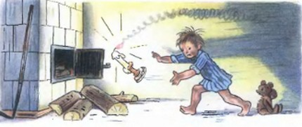

Одеяло
Убежало,
Улетела простыня,
И подушка,
Как лягушка,
Ускакала от меня.
Я за свечку,
Свечка - в печку!

Я за книжку,
Та - бежать
И вприпрыжку
Под кровать!
Я хочу напиться чаю,
К самовару подбегаю,
Но пузатый от меня
Убежал, как от огня.
Боже, боже,
Что случилось?
Отчего же
Всё кругом
Завертелось,
Закружилось
И помчалось колесом?
Утюги за сапогами,
Сапоги за пирогами,
Пироги за утюгами,
Кочерга за кушаком -
Всё вертится,
И кружится,
И несётся кувырком.
Вдруг из маминой из спальни,
Кривоногий и хромой,
Выбегает умывальник
И качает головой:
"Ах ты, гадкий, ах ты, грязный,
Неумытый поросёнок!
Ты чернее трубочиста,
Полюбуйся на себя:
У тебя на шее вакса,
У тебя под носом клякса,
У тебя такие руки,
Что сбежали даже брюки,
Даже брюки, даже брюки
Убежали от тебя.
Рано утром на рассвете
Умываются мышата,
И котята, и утята,
И жучки, и паучки.
Ты один не умывался
И грязнулею остался,
И сбежали от грязнули
И чулки и башмаки.
Я - Великий Умывальник,
Знаменитый Мойдодыр,
Умывальников Начальник
И мочалок Командир!
Если топну я ногою,
Позову моих солдат,
В эту комнату толпою
Умывальники влетят,
И залают, и завоют,
И ногами застучат,
И тебе головомойку,
Неумытому, дадут -
Прямо в Мойку,
Прямо в Мойку
С головою окунут!"
Он ударил в медный таз
И вскричал: "Кара-барас!"
И сейчас же щетки, щетки
Затрещали, как трещотки,
И давай меня тереть,
Приговаривать:
"Моем, моем трубочиста
Чисто, чисто, чисто, чисто!
Будет, будет трубочист
Чист, чист, чист, чист!"
Тут и мыло подскочило
И вцепилось в волоса,
И юлило, и мылило,
И кусало, как оса.
А от бешеной мочалки
Я помчался, как от палки,
А она за мной, за мной
По Садовой, по Сенной.
Я к Таврическому саду,
Перепрыгнул чрез ограду,
А она за мною мчится
И кусает, как волчица.
Вдруг навстречу мой хороший,
Мой любимый Крокодил.
Он с Тотошей и Кокошей
По аллее проходил
И мочалку, словно галку,
Словно галку, проглотил.
А потом как зарычит
На меня,
Как ногами застучит
На меня:
"Уходи-ка ты домой,
Говорит,
Да лицо своё умой,
Говорит,
А не то как налечу,
Говорит,
Растопчу и проглочу!"
Говорит.
Как пустился я по улице
бежать,
Прибежал я к умывальнику
опять.
Мылом, мылом
Мылом, мылом
Умывался без конца,
Смыл и ваксу
И чернила
С неумытого лица.
И сейчас же брюки, брюки
Так и прыгнули мне в руки.
А за ними пирожок:
"Ну-ка, съешь меня, дружок!"
А за ним и бутерброд:
Подскочил - и прямо в рот!
Вот и книжка воротилась,
Воротилася тетрадь,
И грамматика пустилась
С арифметикой плясать.
Тут Великий Умывальник,
Знаменитый Мойдодыр,
Умывальников Начальник
И мочалок Командир,
Подбежал ко мне, танцуя,
И, целуя, говорил:
"Вот теперь тебя люблю я,
Вот теперь тебя хвалю я!
Наконец-то ты, грязнуля,
Мойдодыру угодил!"
Надо, надо умываться
По утрам и вечерам,
А нечистым
Трубочистам -
Стыд и срам!
Стыд и срам!
Да здравствует мыло душистое,
И полотенце пушистое,
И зубной порошок,
И густой гребешок!
Давайте же мыться, плескаться,
Купаться, нырять, кувыркаться
В ушате, в корыте, в лохани,
В реке, в ручейке, в океане, -
И в ванне, и в бане,
Всегда и везде -
Вечная слава воде!
Корней Чуковский